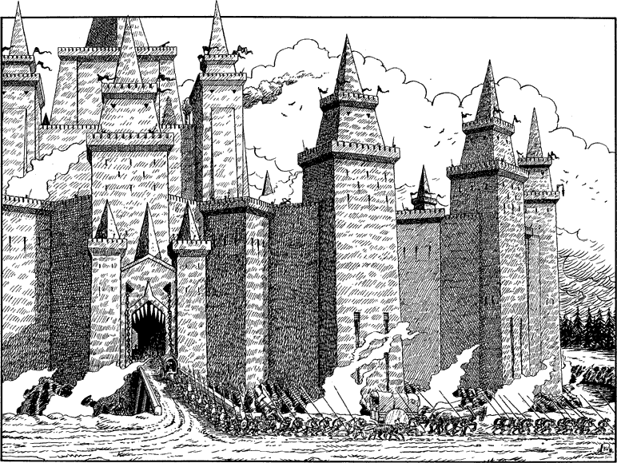

160
You decide that to travel openly along the track would be too risky. Rather than chance falling foul of a Vazhag patrol, you set off through the forest, using the trees for cover, but all the while keeping the trail in sight as you trek northeastwards toward the Cenerese stronghold.
Your decision is soon justified. Within a few minutes you are forced to hide when a rickety wagon, laden with casks and escorted by a dozen Vazhag, appears on the trail ahead. Unaware of your presence, the detachment passes within yards of your position before continuing on its way southwards.
It is an hour past noon when the trees thin out and you catch your first glimpse of Mogaruith. Crouching at the forest’s edge, you stare awestricken by the sight of its slime-green walls and towers. This vast Cenerese fortress, rising out of the land like the thrusting fist of some vile volcanic demon, bristles with formidable defences. Turrets and bastions punctuate its sheer stone walls, and its base is ringed by a moat of bubbling water. A single drawbridge spans this moat, providing sole access to an archway lined with iron spikes, which gives the entrance a monstrous appearance, like that of a gigantic fanged maw.

Two muddy tracks lead away from the drawbridge. One is the Skardos Trail, the track that brought you here, and the other heads due east. You consult your map and discover that it leads to the River Storn, less than five miles distant. There a bridge spans this mighty waterway, connecting Ruel to the realm of Slovia. A small army of Vazhag, accompanied by a host of other creatures of doubtful origin, are marching away from Mogaruith in a column. Judging by their numbers, and the wagonloads of equipment they trundle in their wake, you suspect that they are marching to battle with the Freeland army of Slovia.
In order to destroy the plague virus and fulfil your vital quest, you know you must gain entry to this stronghold. Anxiously you let the minutes pass as you scan the interminable lines of marching Vazhag, and the fortress walls, in the hope of spotting a means by which you could enter Mogaruith undetected.
If you possess a Cener Mask and a Cener Robe, turn to 292.
If you do not possess both of these items, turn to 193.